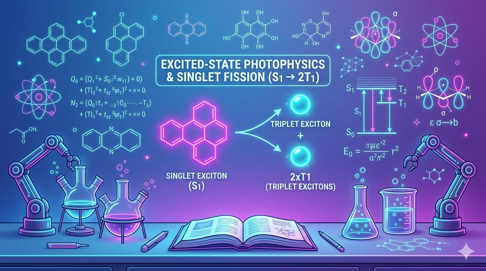
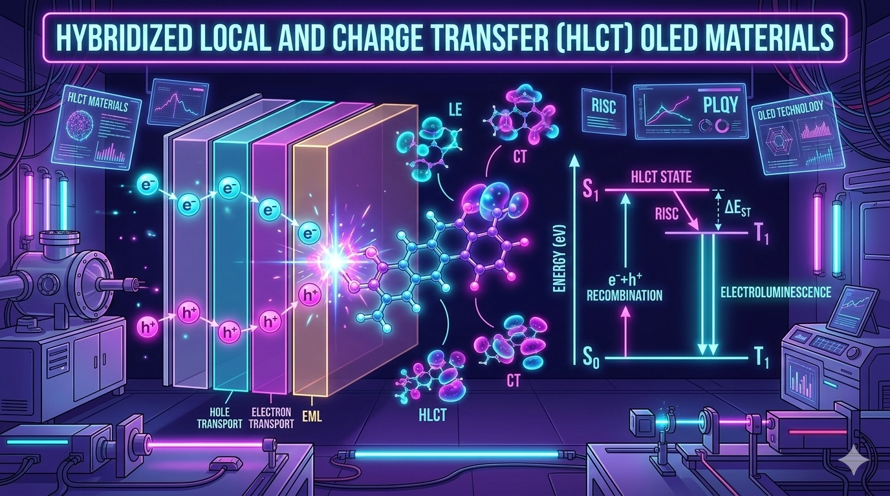
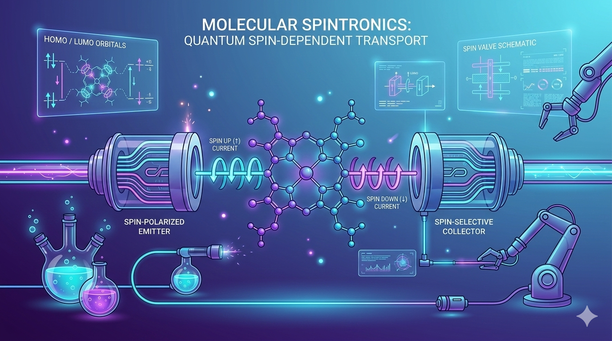
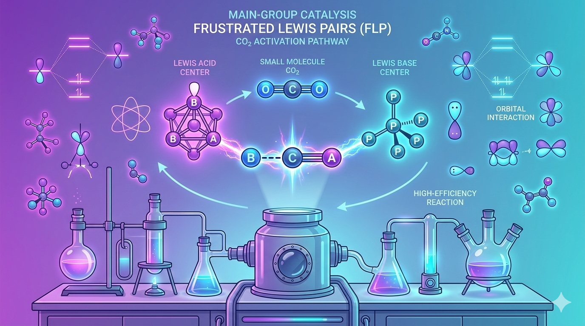
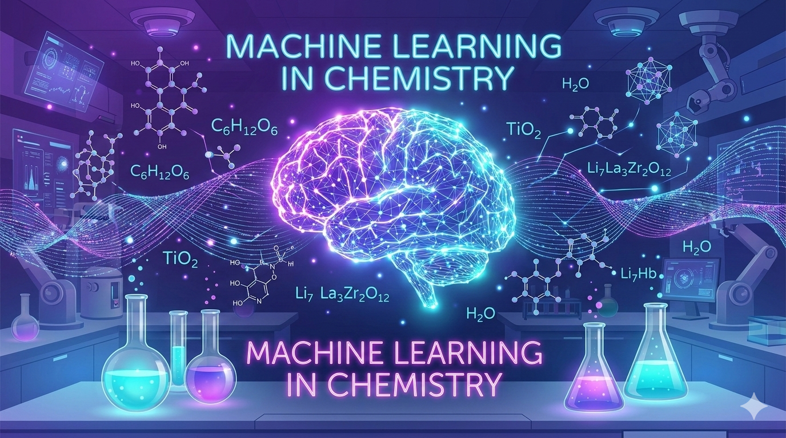

Computational Chemistry & Materials Design

Singlet fission is an intriguing photophysical process where a single high-energy singlet exciton splits into two triplet excitons, potentially doubling the number of charge carriers generated from one photon. My research explores the electronic structure of organic chromophores and conjugated molecular dimers to understand the excited-state coupling pathways that facilitate efficient singlet fission. Using correlated quantum chemical methods and model Hamiltonians, I investigate how molecular topology, symmetry, and intermolecular interactions govern exciton splitting dynamics.

Hot exciton materials based on hybridized local and charge-transfer (HLCT) states provide a promising strategy for overcoming spin statistical limits in organic light-emitting diodes. My work focuses on donor–π–acceptor architectures where the interplay between local excitation and charge-transfer character enables efficient reverse intersystem crossing. Through computational excited-state analysis and wavefunction-based approaches, I study the mechanisms that control exciton utilization and guide the design of high-performance OLED emitters.

Molecular spintronics aims to control electron spin in nanoscale devices using organic molecular systems. My research investigates spin-dependent electron transport through conjugated molecules such as dibenzopentalene derivatives connected between graphene electrodes. Using nonequilibrium Green’s function (NEGF) methods combined with density functional theory, I explore spin filtering, spin polarization, and thermoelectric transport properties in molecular junctions. These studies help reveal how molecular structure influences spin-selective transport at the quantum level.

Frustrated Lewis pairs (FLPs) represent a fascinating class of main-group catalytic systems capable of activating small molecules without transition metals. My work focuses on understanding the reactivity of germylene–borane FLP adducts for activation of molecules such as CO₂ and N₂O. Through density functional theory calculations and reaction energy profiling, I examine the electronic factors that control bond activation, charge transfer, and catalytic pathways. These studies contribute to the development of sustainable main-group catalytic strategies.

Machine learning is rapidly transforming molecular discovery by linking chemical descriptors with electronic and excited-state properties. My research integrates molecular descriptor generation, quantum chemical data, and supervised learning algorithms to predict excited-state energy gaps relevant to singlet fission and hot-exciton materials. By combining cheminformatics with data-driven models, I aim to accelerate the discovery of next-generation organic optoelectronic materials.